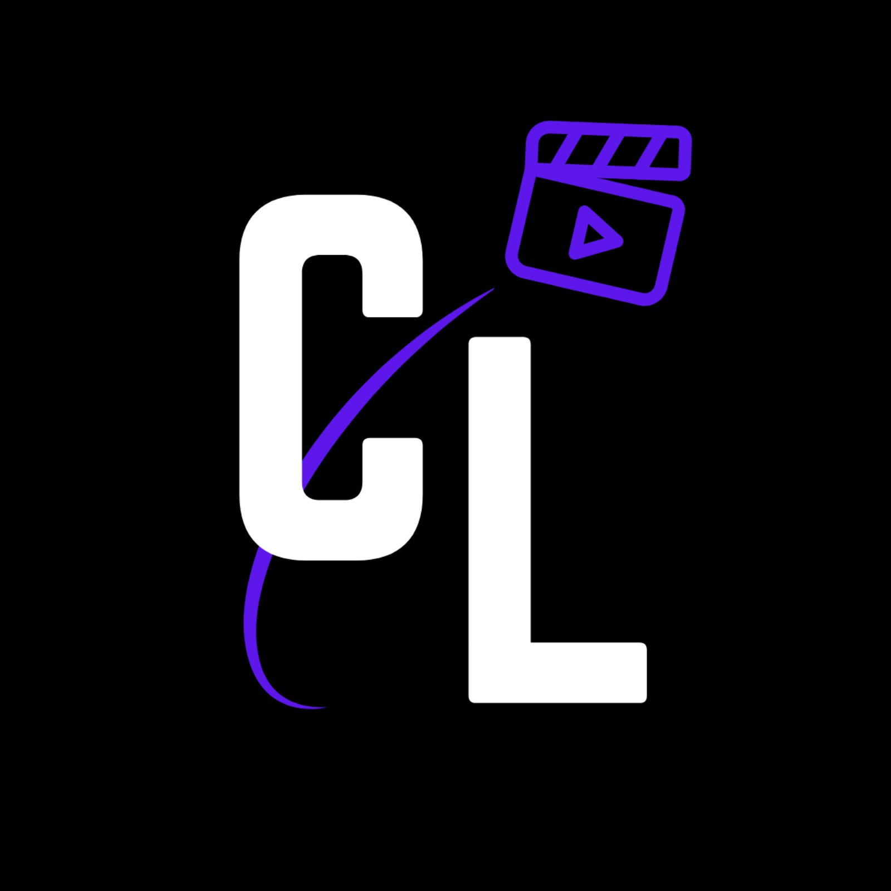

<!DOCTYPE html>
<html lang="en">
<head>
<meta charset="UTF-8" />
<meta name="viewport" content="width=device-width, initial-scale=1.0" />
<title>Offer to Client — Your Roadmap</title>
<meta name="robots" content="noindex" />
<link rel="icon" href="../logo.jpg" />
<link rel="preconnect" href="https://fonts.googleapis.com" />
<link rel="preconnect" href="https://fonts.gstatic.com" crossorigin />
<link href="https://fonts.googleapis.com/css2?family=DM+Sans:ital,opsz,wght@0,9..40,300;0,9..40,400;0,9..40,500;0,9..40,600;0,9..40,700;1,9..40,400&display=swap" rel="stylesheet" />
<style>
*, *::before, *::after { box-sizing: border-box; margin: 0; padding: 0; }
:root {
  --black: #0a0a0a; --white: #fff;
  --purple: #7B2FFF; --purple-light: #9B5FFF;
  --purple-glow: rgba(123,47,255,.15); --purple-border: rgba(123,47,255,.3);
  --gray-900: #111; --gray-850: #151515; --gray-800: #1a1a1a; --gray-700: #242424;
  --gray-600: #333; --gray-400: #666; --gray-300: #888; --gray-200: #aaa;
  --green: #2fd968; --green-bg: rgba(47,217,104,.1);
  --amber: #f5a524; --amber-bg: rgba(245,165,36,.08); --amber-border: rgba(245,165,36,.28);
  --r-sm: 8px; --r-md: 12px; --r-lg: 16px;
}
html { font-size: 16px; -webkit-text-size-adjust: 100%; }
body {
  font-family: 'DM Sans', system-ui, -apple-system, sans-serif;
  background: var(--black); color: var(--white); min-height: 100vh;
  display: flex; flex-direction: column; align-items: center; padding: 0 1rem 6rem;
  -webkit-font-smoothing: antialiased; line-height: 1.55;
}
body::before {
  content: ''; position: fixed; inset: 0; pointer-events: none; z-index: 0; opacity: .4;
  background-image: url("data:image/svg+xml,%3Csvg viewBox='0 0 200 200' xmlns='http://www.w3.org/2000/svg'%3E%3Cfilter id='n'%3E%3CfeTurbulence type='fractalNoise' baseFrequency='0.9' numOctaves='4' stitchTiles='stitch'/%3E%3C/filter%3E%3Crect width='100%25' height='100%25' filter='url(%23n)' opacity='0.03'/%3E%3C/svg%3E");
}
.wrap { width: 100%; max-width: 720px; position: relative; z-index: 1; }

/* --- sticky bar: progress, never a countdown --- */
.bar {
  position: sticky; top: 0; z-index: 20; margin: 0 -1rem 1.6rem; padding: .8rem 1rem;
  background: rgba(10,10,10,.9); backdrop-filter: blur(12px);
  border-bottom: 1px solid var(--gray-700);
  display: flex; align-items: center; justify-content: space-between; gap: 1rem;
}
.bar-left { display: flex; align-items: center; gap: .6rem; min-width: 0; }
.bar-logo { width: 26px; height: 26px; border-radius: 6px; flex-shrink: 0; }
.bar-count { font-size: 13.5px; font-weight: 600; white-space: nowrap; }
.bar-count .num { color: var(--purple-light); }
.bar-right { display: flex; align-items: center; gap: .7rem; flex-shrink: 0; }
.bar-resume { font-size: 12px; font-weight: 600; color: var(--purple-light); background: var(--purple-glow); border: 1px solid var(--purple-border); border-radius: 99px; padding: .3rem .7rem; cursor: pointer; font-family: inherit; white-space: nowrap; }
.bar-resume:hover { background: rgba(123,47,255,.25); }
.bar-track { width: 72px; height: 4px; background: var(--gray-700); border-radius: 99px; overflow: hidden; }
.bar-fill { height: 100%; width: 0; background: linear-gradient(90deg, var(--purple), var(--purple-light)); border-radius: 99px; transition: width .4s ease; }

.head { padding: 1.4rem 0 0; }
.eyebrow { font-size: 11px; letter-spacing: .14em; text-transform: uppercase; color: var(--purple-light); font-weight: 600; margin-bottom: .7rem; }
.sec-label { font-size: 11px; letter-spacing: .14em; text-transform: uppercase; color: var(--gray-400); font-weight: 700; margin: 2.4rem 0 .9rem; }
h1 { font-size: clamp(1.75rem, 5.5vw, 2.4rem); font-weight: 700; letter-spacing: -.03em; line-height: 1.12; margin-bottom: .7rem; }
.lede { color: var(--gray-200); font-size: 15px; line-height: 1.7; margin-bottom: 1.4rem; }
.lede strong { color: #fff; font-weight: 600; }
.chips { display: flex; flex-wrap: wrap; gap: .45rem; margin-bottom: 1.6rem; }
.chip { font-size: 12px; font-weight: 500; padding: .35rem .7rem; border-radius: 99px; background: var(--gray-900); border: 1px solid var(--gray-700); color: var(--gray-200); }
.chip.hi { background: var(--purple-glow); border-color: var(--purple-border); color: var(--purple-light); font-weight: 600; }

.callout { border-radius: var(--r-lg); padding: 1.05rem 1.2rem; margin-bottom: 1.5rem; font-size: 14px; line-height: 1.7; }
.callout-title { font-weight: 600; font-size: 14.5px; margin-bottom: .4rem; }
.callout.speed { background: var(--purple-glow); border: 1px solid var(--purple-border); }
.callout.speed .callout-title { color: var(--purple-light); }
.callout.warn { background: var(--amber-bg); border: 1px solid var(--amber-border); color: var(--gray-200); }
.callout.warn .callout-title { color: var(--amber); }
.callout strong { color: #fff; }

/* --- overview table, file-browser flavoured --- */
.tbl { border: 1px solid var(--gray-700); border-radius: var(--r-lg); overflow: hidden; background: var(--gray-900); margin-bottom: 1.8rem; }
.tbl-crumb { font-size: 11.5px; color: var(--gray-400); padding: .65rem 1rem; border-bottom: 1px solid var(--gray-700); background: var(--gray-850); }
.tbl-crumb span { color: var(--gray-200); }
.tbl-head, .tbl-row { display: grid; grid-template-columns: 1fr 104px 74px; gap: .8rem; align-items: center; padding: .7rem 1rem; }
.tbl-head { font-size: 10.5px; letter-spacing: .1em; text-transform: uppercase; color: var(--gray-400); font-weight: 700; border-bottom: 1px solid var(--gray-700); }
.tbl-row { border-bottom: 1px solid var(--gray-800); cursor: pointer; font-size: 14px; }
.tbl-row:last-child { border-bottom: none; }
.tbl-row:hover { background: var(--gray-850); }
.tbl-name { display: flex; align-items: center; gap: .55rem; min-width: 0; }
.tbl-name b { font-weight: 600; letter-spacing: -.01em; }
.tbl-ico { width: 18px; height: 18px; border-radius: 4px; background: var(--gray-700); flex-shrink: 0; display: flex; align-items: center; justify-content: center; font-size: 10px; font-weight: 700; color: var(--gray-300); }
.tbl-row.done-all .tbl-ico { background: var(--green); color: var(--black); }
.tbl-row.current .tbl-ico { background: var(--purple); color: #fff; }
.tbl-status { font-size: 11px; font-weight: 600; padding: .2rem .55rem; border-radius: 5px; background: var(--gray-800); color: var(--gray-300); justify-self: start; white-space: nowrap; }
.tbl-status.go { background: var(--purple-glow); color: var(--purple-light); }
.tbl-status.ok { background: var(--green-bg); color: var(--green); }
.tbl-size { font-size: 12px; color: var(--gray-400); font-variant-numeric: tabular-nums; text-align: right; }
.tbl-foot { font-size: 11.5px; color: var(--gray-400); padding: .6rem 1rem; border-top: 1px solid var(--gray-700); background: var(--gray-850); }

/* --- phases --- */
.phase { border: 1px solid var(--gray-700); border-radius: var(--r-lg); margin-bottom: 1rem; overflow: hidden; background: var(--gray-900); scroll-margin-top: 70px; }
.phase.current { border-color: var(--purple-border); box-shadow: 0 0 0 3px rgba(123,47,255,.07); }
.phase-head { width: 100%; text-align: left; background: none; border: none; color: var(--white); font-family: inherit; padding: 1.15rem 1.25rem; cursor: pointer; display: flex; align-items: center; gap: .9rem; }
.phase-head:hover { background: var(--gray-850); }
.phase-badge { width: 30px; height: 30px; border-radius: 8px; background: var(--gray-700); color: var(--gray-200); font-size: 13px; font-weight: 700; display: flex; align-items: center; justify-content: center; flex-shrink: 0; }
.phase.current .phase-badge { background: var(--purple); color: #fff; }
.phase.done-all .phase-badge { background: var(--green); color: var(--black); }
.phase-txt { flex: 1; min-width: 0; }
.phase-name { font-size: 16px; font-weight: 600; letter-spacing: -.015em; line-height: 1.3; }
.phase-meta { font-size: 12.5px; color: var(--gray-400); margin-top: 2px; }
.phase-tag { font-size: 10.5px; font-weight: 700; letter-spacing: .08em; text-transform: uppercase; color: var(--purple-light); background: var(--purple-glow); border: 1px solid var(--purple-border); padding: .22rem .5rem; border-radius: 5px; margin-left: .5rem; white-space: nowrap; }
.phase-caret { color: var(--gray-400); font-size: 13px; transition: transform .25s ease; flex-shrink: 0; }
.phase.open .phase-caret { transform: rotate(180deg); }
.phase-body { display: none; padding: 0 1.25rem 1.3rem; }
.phase.open .phase-body { display: block; }
.phase-goal { font-size: 13.5px; color: var(--gray-200); background: var(--gray-850); border-left: 2px solid var(--purple); border-radius: 0 var(--r-sm) var(--r-sm) 0; padding: .75rem .9rem; margin-bottom: 1.2rem; line-height: 1.65; }

.task { display: flex; gap: .75rem; padding: .62rem 0; align-items: flex-start; border-top: 1px solid var(--gray-800); }
.task:first-of-type { border-top: none; }
.task-box {
  width: 20px; height: 20px; border-radius: 6px; border: 1.5px solid var(--gray-600);
  background: var(--gray-850); flex-shrink: 0; cursor: pointer; margin-top: 2px;
  display: flex; align-items: center; justify-content: center; transition: all .16s ease; padding: 0;
}
.task-box:hover { border-color: var(--purple); }
.task-box.checked { background: var(--green); border-color: var(--green); }
.task-box.checked::after { content: '\2713'; color: var(--black); font-size: 12px; font-weight: 700; line-height: 1; }
.task-main { flex: 1; min-width: 0; }
.task-text { font-size: 14.5px; line-height: 1.5; font-weight: 500; }
.task.checked .task-text { color: var(--gray-400); text-decoration: line-through; text-decoration-color: var(--gray-600); }
.task-row { display: flex; flex-wrap: wrap; gap: .4rem; margin-top: .45rem; align-items: center; }
.tlink {
  display: inline-flex; align-items: center; gap: .3rem; font-size: 12px; font-weight: 500;
  padding: .28rem .6rem; border-radius: 6px; cursor: pointer; font-family: inherit;
  background: var(--gray-800); border: 1px solid var(--gray-600); color: var(--gray-200);
}
.tlink:hover { border-color: var(--gray-400); color: #fff; }
.track-tag { font-size: 10px; font-weight: 700; letter-spacing: .07em; text-transform: uppercase; padding: .2rem .45rem; border-radius: 4px; background: var(--purple-glow); color: var(--purple-light); border: 1px solid var(--purple-border); }
.track-tag.off { background: var(--gray-800); color: var(--gray-400); border-color: var(--gray-700); }

/* --- the teaching --- */
.teach { display: none; margin: .7rem 0 .4rem; background: var(--gray-850); border: 1px solid var(--gray-700); border-radius: var(--r-md); padding: 1.05rem 1.15rem; }
.teach.open { display: block; animation: fade .25s ease; }
@keyframes fade { from { opacity: 0; transform: translateY(-4px); } to { opacity: 1; transform: none; } }
.teach p { font-size: 14px; color: var(--gray-200); line-height: 1.75; margin-bottom: .75rem; }
.teach p:last-child { margin-bottom: 0; }
.teach strong { color: #fff; font-weight: 600; }
.teach em { color: var(--purple-light); font-style: normal; font-weight: 500; }
.teach h5 { font-size: 11px; letter-spacing: .1em; text-transform: uppercase; color: var(--gray-400); font-weight: 700; margin: 1.1rem 0 .5rem; }
.teach ul { margin: 0 0 .8rem 1.05rem; }
.teach li { font-size: 14px; color: var(--gray-200); line-height: 1.7; margin-bottom: .4rem; }
.do { background: var(--purple-glow); border: 1px solid var(--purple-border); border-radius: var(--r-sm); padding: .7rem .85rem; font-size: 13.5px; line-height: 1.65; color: #fff; margin-top: .9rem; }
.do b { color: var(--purple-light); display: block; font-size: 11px; letter-spacing: .1em; text-transform: uppercase; margin-bottom: .25rem; }
.script { background: #0d0d0d; border: 1px solid var(--gray-700); border-radius: var(--r-sm); padding: .85rem .95rem; font-size: 13px; line-height: 1.7; color: var(--gray-200); margin-bottom: .7rem; white-space: pre-wrap; word-break: break-word; }
.copy-btn { background: var(--gray-800); border: 1px solid var(--gray-600); color: var(--gray-200); font-family: inherit; font-size: 11.5px; font-weight: 500; padding: .3rem .65rem; border-radius: 6px; cursor: pointer; }
.copy-btn:hover { border-color: var(--gray-400); color: #fff; }

.btn { display: inline-flex; align-items: center; justify-content: center; gap: .5rem; background: var(--purple); color: #fff; border: none; border-radius: var(--r-md); padding: .95rem 1.6rem; font-family: inherit; font-size: 15px; font-weight: 600; cursor: pointer; text-decoration: none; transition: all .18s ease; }
.btn:hover { background: var(--purple-light); transform: translateY(-1px); }
.foot { text-align: center; margin-top: 2.5rem; padding-top: 1.6rem; border-top: 1px solid var(--gray-700); }
.foot p { font-size: 13px; color: var(--gray-400); line-height: 1.75; margin-bottom: 1rem; }
.foot p strong { color: #fff; }
.reset { background: none; border: none; color: var(--gray-600); font-family: inherit; font-size: 11.5px; cursor: pointer; text-decoration: underline; margin-top: 1.2rem; }
.reset:hover { color: var(--gray-400); }
@media (max-width: 560px) {
  .phase-head { padding: 1rem; gap: .7rem; }
  .phase-body { padding: 0 1rem 1.1rem; }
  .phase-tag { display: none; }
  .tbl-head, .tbl-row { grid-template-columns: 1fr 92px; }
  .tbl-size { display: none; }
}
</style>
</head>
<body>
<div class="wrap" id="root"></div>

<script>
/* ===========================================================================
   Offer to Client — the roadmap

   Everything is given away: all 55 items, with the teaching written inline
   rather than linked. The source modules live behind a members area, so a
   link would 404 for a lead; and inlining means the page is the asset.

   There is deliberately no deadline. Nothing locks, nothing expires. The
   motivator is progress and permanence, not a countdown.
   =========================================================================== */

var AKIRA = 'https://www.instagram.com/akira.ugc/';
var PROFILE_KEY  = 'clp_offer_profile_v1';
var PROGRESS_KEY = 'clp_offer_progress_v1';

function readJSON(k, fallback) {
  try { var v = localStorage.getItem(k); return v ? JSON.parse(v) : fallback; } catch (e) { return fallback; }
}
function writeJSON(k, v) { try { localStorage.setItem(k, JSON.stringify(v)); } catch (e) {} }

var profile = readJSON(PROFILE_KEY, null) || {};

/* The plan can also arrive on the link, so opening the roadmap on another
   device still gets the right phase and track. Storage wins when it has
   something — it is the fuller record and carries their name. */
(function restoreFromLink() {
  try {
    var m = (window.location.hash || '').match(/r=([^&]+)/);
    if (!m || profile.phase !== undefined) return;
    var d = JSON.parse(atob(decodeURIComponent(m[1])));
    if (!d) return;
    profile.phase = d.p; profile.track = d.k; profile.price = d.pr;
    profile.sales = d.s; profile.tier = d.t; profile.country = d.c; profile.hours = d.h;
    writeJSON(PROFILE_KEY, profile);
  } catch (e) { /* generic roadmap is fine */ }
})();

var progress   = readJSON(PROGRESS_KEY, {});
var entryPhase = profile.phase === undefined ? 0 : profile.phase;
var track      = profile.track || 'outbound';

/* Pricing guidance swaps on what they said they want to charge. Same task,
   different instruction — a $500 offer and a $5k offer are not sold the
   same way, and pretending otherwise is how advice stops landing. */
var PRICE_NOTE = {
  u500:      "You said under $500. At that price a sales call costs more than it earns — sell it in the DMs or with a simple checkout page, and treat this as the thing that funds the bigger offer later.",
  '500to2k': "You said $500–2k. This is the standard first-offer band: cheap enough to buy on one good call, expensive enough to be worth taking the call. Everything in this roadmap is tuned to it.",
  '2kto5k':  "You said $2–5k. Real high ticket. Expect two calls rather than one for a cold lead, and expect to need at least one named result before people stop flinching.",
  '5kplus':  "You said $5k+. You will not close this on promise alone. Until you have a documented result, either start lower and raise after your first win, or sell it as an offer to scale something that is already working."
};
var SALES_NOTE = {
  never:     "You have never closed on a call. That is the single biggest thing standing between you and money, so do not skim Phase 3 — it starts from what to say in the first sixty seconds.",
  few:       "You have closed a handful but could not say why. Phase 3 is where that becomes repeatable instead of lucky.",
  regularly: "You already close. Phase 3 will be revision — skim it, then spend your time on the drills in the last lesson and on Phase 4."
};

/* ===========================================================================
   THE ROADMAP — 5 phases, 55 items, ordered by speed to cash
   =========================================================================== */
// track is optional: 'inbound' or 'outbound'. Tasks without one apply to
// everybody. Tasks with one still render for everybody — all of it is given
// away — they are just labelled so you know which is yours.
function D(title, body, track) { return { t: title, teach: body, track: track }; }

var PHASES = [
  /* ------------------------------------------------------------------ 0 */
  {
    n: 0,
    title: 'Positioning',
    goal: 'Work out what you are actually selling and who to. Three sheets, not six — the other three are content prep and they come later, once you have money coming in.',
    tasks: [
      D('Fill the Zone Of Genius sheet — what do people already come to you for?',
        "<p>Your offer does not start with what you want to sell. It starts with what people already interrupt you to ask about.</p>" +
        "<p>Open your DMs and scroll back three months. Every time someone asked you how to do something, write it down. The thing that comes up most is your zone of genius whether you rate it or not — you will undervalue it precisely <em>because</em> it is easy for you.</p>" +
        "<h5>What you are looking for</h5><ul>" +
        "<li>You are better at it than most people you know</li>" +
        "<li>You can do it without dreading it</li>" +
        "<li>Somebody has already asked you about it without being prompted</li>" +
        "</ul>" +
        "<div class='do'><b>Do this now</b>Write ten things down. Circle the three that actually appear in your DMs. One of those three is your offer.</div>"),

      D('Fill the Dream Followers sheet — name one real person, not a demographic',
        "<p><strong>Men 25–40 interested in fitness</strong> is not a person, and you cannot write a DM to it.</p>" +
        "<p>Pick somebody real. Someone you know, or an account you can open right now. Put their actual name at the top of the sheet. Then answer: what do they do all day, what have they already tried that did not work, what do they say out loud when they are frustrated, and what would make them say <em>finally</em>.</p>" +
        "<p>Every message you write from here on gets written to that one person. When copy feels generic, it is almost always because it was written to a demographic instead of a human.</p>" +
        "<div class='do'><b>Do this now</b>Name the person. Write the sentence they would say out loud about their problem, in their words, not yours.</div>"),

      D('Fill the Competitor Research sheet — find 5 people selling near you',
        "<p>Not so you can copy them. You are after three things only: <strong>what they charge, what they promise, and what they leave out.</strong></p>" +
        "<p>The gap is your angle. Most people in your space sell the same outcome to the same person at a similar price. Your opening is not a better promise — it is a <em>different</em> one.</p>" +
        "<p>Write all five prices down. Yours will either sit inside that range, or you will need a reason it does not. Both are fine. Not knowing is not.</p>" +
        "<div class='do'><b>Do this now</b>Five names, five prices, five promises. Then write the one sentence none of them are saying.</div>")
    ]
  },

  /* ------------------------------------------------------------------ 1 */
  {
    n: 1,
    title: 'The Offer',
    goal: 'Build something worth paying for, priced, packaged, and with somewhere to send people. You finish this phase with a deck and a live booking link — things that exist.',
    tasks: [
      D('Interview 5 people in your market — write down their exact words',
        "<p>You are not asking people what they want. People are bad at that. You are asking what they have already tried and what happened.</p>" +
        "<h5>Three questions, fifteen minutes each</h5><ul>" +
        "<li>What have you tried to fix this?</li>" +
        "<li>What happened?</li>" +
        "<li>What would have to be true for this to be solved?</li>" +
        "</ul>" +
        "<p>Take notes <strong>verbatim</strong>. The words they use are the words that go into your offer — not your words. If someone says <em>I am sick of posting and nothing happening</em>, that line goes into your copy exactly as spoken. This is the single highest-leverage hour in the whole phase and it is the one everybody skips.</p>" +
        "<div class='do'><b>Do this now</b>Five conversations. One document of direct quotes. Highlight any phrase that appears twice.</div>"),

      D('Write your offer in one sentence: who, what result, how long',
        "<p>The format:</p>" +
        "<div class='script'>I help [specific person] get [specific result] in [timeframe] without [the thing they hate].</div>" +
        "<p>If you cannot fill that in, you do not have an offer yet — you have a service.</p>" +
        "<p>The specificity <em>is</em> the product. <strong>I help people with fitness</strong> sells nothing. <strong>I help desk-job dads lose 15lbs in 90 days without giving up dinner with their family</strong> sells, because the person it is for recognises themselves in it.</p>" +
        "<p>Write ten versions. Read them out loud. Most will sound like everybody else — keep the one that sounds like a promise you would have to defend.</p>" +
        "<div class='do'><b>Do this now</b>Ten versions. Pick one. Send it to a friend and see if they can tell you who it is for without being told.</div>"),

      D('Set your price — and the one line you would say out loud to justify it',
        "<p>Price off the value of the outcome, not your hours. If the result is worth $20,000 to them, $2,000 is not expensive.</p>" +
        "<p>The real test is not a spreadsheet. It is whether you can say the number on a call without your voice going up at the end. Practise it: <strong>It is two thousand.</strong> Full stop. No justification unless they ask.</p>" +
        "<p>If you flinch, either the price is wrong or your belief in the offer is. It is almost always the second, and it gets fixed by delivering the thing well once — not by lowering the number.</p>" +
        "<div class='do'><b>Do this now</b>Say your price out loud ten times. Record it once. Listen back. If it goes up at the end, say it ten more.</div>"),

      D('Add one bonus and one guarantee that kill the biggest objection',
        "<p>Do not stack bonuses to inflate value. It is transparent and it cheapens you.</p>" +
        "<p><strong>One bonus</strong>, and it should remove the reason they would say no. If the objection is <em>I will not have time</em>, the bonus is done-for-you templates. If it is <em>I have bought things before and never used them</em>, the bonus is a weekly check-in.</p>" +
        "<p><strong>One guarantee</strong>, built the same way: name the specific fear and absorb it. A vague guarantee signals nothing. A specific one signals you have seen this exact worry before, which is its own proof.</p>" +
        "<div class='do'><b>Do this now</b>Write the single biggest reason someone says no. Build the bonus that deletes it.</div>"),

      D('Map what you actually deliver, week by week',
        "<p>Write the weeks out <em>before</em> you sell it, not after.</p>" +
        "<p>Two reasons. You cannot sell a vague thing convincingly — people hear the vagueness. And the moment somebody pays, you will be building it under pressure if you have not already.</p>" +
        "<p>Keep it to the minimum that produces the result. People buy outcomes, not volume. Every extra thing you promise is another thing you have to deliver for the same money, and it makes the offer harder to explain, not easier to sell.</p>" +
        "<div class='do'><b>Do this now</b>Week 1 they get ___. Week 2 ___. Keep going until the result is delivered. Then cut anything that is not load-bearing.</div>"),

      D('Write your D1 fulfilment — what happens in their first 24 hours',
        "<p>The first day decides your refund risk and your referral odds. Buyer's remorse peaks within hours, not weeks.</p>" +
        "<h5>What has to happen</h5><ul>" +
        "<li>A message within the hour that does not sound automated</li>" +
        "<li>Something they can actually do today</li>" +
        "<li>A clear statement of what happens next and when</li>" +
        "</ul>" +
        "<p>One task on day one that produces a small visible win is worth more than an entire onboarding portal. Write the exact message now and have it saved — before the first sale, not after it.</p>" +
        "<div class='do'><b>Do this now</b>Write the welcome message word for word. Save it somewhere you can paste from.</div>"),

      D('Build the offer pitch deck',
        "<p>Not a deck for investors. Seven slides you can screen-share on a call or send afterwards.</p>" +
        "<ul>" +
        "<li>Who it is for</li><li>What the problem is costing them</li><li>What you do</li>" +
        "<li>What they get, week by week</li><li>Proof, if you have any</li><li>The price</li><li>The next step</li>" +
        "</ul>" +
        "<p>The deck's job is not to sell. It is to stop you rambling and to give them something to look at while you talk. If you have no proof yet, <strong>leave the slide out</strong> rather than filling it with stock photos — an empty space is better than an obvious bluff.</p>" +
        "<div class='do'><b>Do this now</b>Seven slides. Plain. No animations. Done beats pretty.</div>"),

      D('Send your offer out for feedback',
        "<p>Send it to three people: somebody in your market, somebody who sells things for a living, and somebody who will be blunt with you.</p>" +
        "<p>Ask one question — <strong>what is the part you do not believe?</strong></p>" +
        "<p>Not <em>what do you think</em>, which gets you politeness and wastes everybody's time. The part they do not believe is the part that will kill your calls, and you want to find it now rather than live on a call with a real prospect.</p>" +
        "<div class='do'><b>Do this now</b>Three people. One question. Write the answers down without defending yourself.</div>"),

      D('Take the feedback and rewrite the offer — once',
        "<p>Once. Not five times.</p>" +
        "<p>The failure mode here is rewriting forever, because editing feels productive and selling feels frightening. Fix what more than one person flagged, ignore the rest, and move.</p>" +
        "<p>The offer gets genuinely sharp after you have pitched it ten times, not after you have edited it ten times. The market will tell you more in a week than you can work out alone in a month.</p>" +
        "<div class='do'><b>Do this now</b>One rewrite. Then stop touching it and go to the next phase.</div>"),

      D('Set up your call booking link',
        "<p>Calendly or anything like it, free tier is fine. Thirty minutes, a buffer either side, and only your real availability.</p>" +
        "<p><strong>Two questions maximum</strong> on the booking form: what they are struggling with, and what they have already tried. Any more and people abandon halfway.</p>" +
        "<p>Put the link in your bio and in your DM scripts. You now have somewhere to send people, which is the only reason the next phase works.</p>" +
        "<div class='do'><b>Do this now</b>Create it, book a test slot yourself, and check the confirmation email does not look broken.</div>")
    ]
  },

  /* ------------------------------------------------------------------ 2 */
  {
    n: 2,
    title: 'Booked Calls',
    goal: 'Get qualified people onto calls. This is the biggest phase and the one that produces money fastest — outbound can book a call this week, which is why it comes before content.',
    tasks: [
      D('Understand what appointment setting actually is',
        "<p>Booking calls with people who might buy. That is the whole job.</p>" +
        "<p>It is <strong>not</strong> sales. The only objective is getting a qualified person onto a call with some context attached. Most people blur the two, pitch in the DMs, and get ignored.</p>" +
        "<p>A DM's job is to earn a conversation. Nothing more. Once you accept that, your messages get shorter and your reply rate goes up.</p>"),

      D('Get the two things that make someone reply: trust and incentive',
        "<p>Only two things make a stranger reply.</p>" +
        "<p><strong>Trust</strong> — do I believe this person is real and not about to waste my time? That comes from your profile looking like a human's, from being specific, and from not sounding like a template.</p>" +
        "<p><strong>Incentive</strong> — is there something in this for me? That comes from the message being about them rather than about you.</p>" +
        "<p>Miss either one and you get silence. Most failed outreach has neither.</p>" +
        "<div class='do'><b>Do this now</b>Open your own profile as a stranger would. Would you reply to you?</div>"),

      D('Run the client shoes test on every message before you send it',
        "<p>Read your own DM as the person receiving it.</p>" +
        "<p>They have fifty unread messages and half are pitches. Does yours read like the other twenty-five? If it opens with <em>Hey man, hope you are well</em> — it does.</p>" +
        "<p>This is a thirty-second check that will do more for your reply rate than any script. Write the message, then read it as them, then cut the first line, because the first line is almost always throat-clearing.</p>"),

      D('Sort your list into cold, warm and hot before you write anything',
        "<p>Three types of lead, and they need different messages.</p>" +
        "<ul>" +
        "<li><strong>Cold</strong> — never heard of you. Needs trust before anything else.</li>" +
        "<li><strong>Warm</strong> — has seen your content or follows you. Needs a reason to act now.</li>" +
        "<li><strong>Hot</strong> — has engaged, asked, or been referred. Needs you not to mess it up.</li>" +
        "</ul>" +
        "<p>Sending the same message to all three is the main reason reply rates are bad. Sort the list first; it takes ten minutes and changes everything downstream.</p>"),

      D('Fix your formatting — short lines, no links, one message',
        "<ul>" +
        "<li>Short lines. Nothing over two lines on a phone screen.</li>" +
        "<li><strong>No links in the first message.</strong> Platforms suppress them and it reads as a pitch.</li>" +
        "<li>Voice notes convert well <em>after</em> rapport and badly before it.</li>" +
        "<li>Send one message, not five in a row. Five reads as desperate.</li>" +
        "</ul>" +
        "<p>None of this is cosmetic. Formatting is the first signal of whether you are a person or a campaign.</p>"),

      D('Learn the three-message rapport opener',
        "<p>Three messages, in order:</p>" +
        "<ul>" +
        "<li><strong>One</strong> — something specific and true about them. No ask.</li>" +
        "<li><strong>Two</strong> — a question they would actually enjoy answering.</li>" +
        "<li><strong>Three</strong> — the bridge to what you do, and only if they replied to two.</li>" +
        "</ul>" +
        "<p>Most people compress all three into one message and ask for a call. The sequence exists because a stranger will not book time with somebody they have exchanged zero words with. If they do not reply to message two, you do not send message three.</p>"),

      D('Run the inbound framework — convert the attention you already have',
        "<p>Inbound means they came to you: a story reply, a comment, a DM, a follow. This is the highest-intent lead you will ever get.</p>" +
        "<p>The mistake is treating it like cold outreach. They have already shown interest — <strong>skip the rapport building</strong> and go straight to qualification: what made you reach out, what have you already tried, how soon are you looking to sort this.</p>" +
        "<p>Reply speed matters more than anything else here. Intent decays within the hour. A good reply in ten minutes beats a perfect reply tomorrow.</p>", 'inbound'),

      D('Run the outbound framework — 30 DMs a day, with a personalisation floor',
        "<p>You go to them. It is a volume game <em>with a floor</em>.</p>" +
        "<p>Build a list of people matching the dream follower you named in Phase 0. Thirty a day, every day. Everything can be templated except one thing: <strong>one genuinely specific line per person that nobody else could have written.</strong></p>" +
        "<p>That is the floor. Below it you are spam and you will get reported. Above it, thirty DMs a day reliably books calls inside a fortnight. The number is not negotiable — this is the phase where effort converts most directly into money.</p>" +
        "<div class='do'><b>Do this now</b>Build a list of 30 names today. Not 100. Thirty you can actually message well.</div>", 'outbound'),

      D('Build your problem / solution pitch library',
        "<p>Write the five problems your offer solves. For each, write a one-sentence solution in <em>their</em> language — the words from your five interviews.</p>" +
        "<p>That is your library. In a live conversation you are no longer improvising, you are selecting. When they name a problem, the sentence is already written.</p>" +
        "<p>Keep it in a note on your phone. You will use it in DMs, on calls, and in your content.</p>" +
        "<div class='do'><b>Do this now</b>Five problems. Five sentences. One note on your phone.</div>"),

      D('Run every opener through the SPARK checklist',
        "<ul>" +
        "<li><strong>S</strong>pecific — something only true of them</li>" +
        "<li><strong>P</strong>roblem — name what you suspect is going on</li>" +
        "<li><strong>A</strong>gitate — what it is costing them to leave it</li>" +
        "<li><strong>R</strong>elate — you have seen this before</li>" +
        "<li><strong>K</strong>eep going — a question that continues the conversation</li>" +
        "</ul>" +
        "<p>Not a formula to recite into a message. A checklist to run <em>against</em> an opener you have already written. If it is missing the S, it will not get read. If it is missing the K, it will not get a reply.</p>"),

      D('Dig past the surface problem — ask what it costs, twice',
        "<p>The first answer is never the real one.</p>" +
        "<p><em>I want more clients</em> is surface. Go down:</p>" +
        "<ul>" +
        "<li>Why do you want more clients? → because the money is unpredictable</li>" +
        "<li>What does unpredictable cost you? → I cannot plan anything, and my partner is getting fed up</li>" +
        "</ul>" +
        "<p>That last one is what they are actually buying a fix for. Nobody buys more clients. They buy being able to plan, and their partner getting off their back.</p>" +
        "<p><strong>Ask what it costs them twice</strong> before you pitch anything at all.</p>"),

      D('Handle objections: acknowledge, isolate, answer',
        "<p>An objection is a question wearing a coat. Do not argue with it and do not fold at it.</p>" +
        "<ul>" +
        "<li><strong>Acknowledge</strong> — that is fair, a lot of people say that</li>" +
        "<li><strong>Isolate</strong> — is that the only thing holding you back?</li>" +
        "<li><strong>Answer</strong> — now, and only now</li>" +
        "</ul>" +
        "<p>Isolating is the step everybody skips and the one that matters. Half the time the stated objection is not the real one, and isolating is what surfaces the real one. Answer the fake objection perfectly and you still lose.</p>"),

      D('Write two or three real disqualifiers and actually use them',
        "<p>Rule people out on purpose. It feels wrong and it raises close rates.</p>" +
        "<p>When you say <em>this might not be for you, you would need X</em> and they push back to tell you they <strong>do</strong> have X — they have just sold themselves. You did nothing.</p>" +
        "<p>It also saves you hours of calls with people who were never buying. Have two or three disqualifiers that are genuinely true, not fake exclusivity.</p>" +
        "<div class='do'><b>Do this now</b>Write the three kinds of person this genuinely does not work for.</div>"),

      D('Use real urgency only — never manufacture it',
        "<p>Fake urgency burns trust permanently, and people can smell it instantly.</p>" +
        "<h5>Real forms</h5><ul>" +
        "<li>Limited slots, because you genuinely have limited hours</li>" +
        "<li>A price rising, because it genuinely is</li>" +
        "<li>A cohort, because one genuinely starts</li>" +
        "</ul>" +
        "<p>If none of those are true, do not invent one. Use the <strong>cost of inaction</strong> instead — what another three months of this costs them. That is always true, and it never sounds like a tactic.</p>"),

      D('Fix your tonality — record one voice note and listen back',
        "<p>In DMs, tonality lives in voice notes and in rhythm.</p>" +
        "<p>Record a voice note and listen to it once before sending. Too fast reads as nervous. Too slow reads as a script being read. Somewhere in the middle reads as someone who has done this before.</p>" +
        "<p>One voice note at the right moment beats twenty text messages, because it proves you are a person. Do not send one as a first message — it is too much too soon and it reads as intense.</p>"),

      D('Read the energy in the thread and match it',
        "<ul>" +
        "<li><strong>Short replies</strong> — they are losing interest. Shorten yours and get to the point.</li>" +
        "<li><strong>Long replies</strong> — they are engaged. Ask another question.</li>" +
        "<li><strong>Venting</strong> — they want acknowledgement before a solution.</li>" +
        "</ul>" +
        "<p>Pitching into a vent is the fastest way to lose a warm lead. When somebody is telling you how bad it has been, the correct next message contains no offer at all.</p>"),

      D('Write your post-booking message and send it within five minutes',
        "<p>The message straight after they book does three things: confirms the time, says what to expect, and asks one small thing of them.</p>" +
        "<p>The small ask is the important part — pull a number, bring one question, have their calendar open. It raises show-up rate because they have now invested something, however small.</p>" +
        "<div class='script'>Locked in for Thursday 2pm.\n\nIt is 30 minutes. I will ask what you have tried, what happened, and where you want this in 90 days — then tell you straight whether I can help.\n\nOne thing before then: have your numbers from the last 30 days to hand. Makes the call far more useful.</div>" +
        "<button class='copy-btn' onclick='copyScript(this)'>Copy</button>"),

      D('Build the show-up system: 24-hour and 1-hour reminders',
        "<p>No-shows are a systems problem, not a people problem.</p>" +
        "<ul>" +
        "<li>Reminder 24 hours before — <strong>ask them to confirm</strong>. A reply roughly doubles show rate.</li>" +
        "<li>Reminder 1 hour before — short, personal, not automated-sounding.</li>" +
        "<li>Make rescheduling easy and obvious.</li>" +
        "</ul>" +
        "<p>Somebody who reschedules still buys. Somebody who ghosts because rescheduling felt awkward never does.</p>"),

      D('Build the 7-touch follow-up sequence',
        "<p>Most of the money is in follow-up, and most people stop at touch two.</p>" +
        "<p>Seven touches across about two weeks. Every one adds something — a thought, a resource, a question, a relevant result. <strong>Never</strong> <em>just bumping this</em>.</p>" +
        "<p>Different angles, not the same message louder. People go quiet because they got busy, not because they hate you. Your follow-up is only a nuisance if it is lazy.</p>" +
        "<div class='do'><b>Do this now</b>Write all seven in advance so you are not inventing them while discouraged.</div>"),

      D("Use Akira's inbound script",
        "<p>For someone who came to you. Adapt the specifics, keep the shape.</p>" +
        "<div class='script'>Appreciate you reaching out.\n\nQuick so I can point you at the right thing — what made you message today specifically? And what have you already tried for it?</div>" +
        "<p>Then, once they answer:</p>" +
        "<div class='script'>That makes sense, and it is the most common version of this I see.\n\nWhat would need to happen in the next 90 days for you to call it sorted?</div>" +
        "<p>Then, if the answer is something you can deliver:</p>" +
        "<div class='script'>I think I can help with that. Easiest thing is 30 minutes on a call — I will tell you exactly what I would do and whether it is worth you doing it.\n\nHere is my calendar: [link]</div>" +
        "<button class='copy-btn' onclick='copyScript(this)'>Copy the opener</button>", 'inbound'),

      D("Use Akira's outbound script",
        "<p>For somebody who has never heard of you. The first line must be unmistakably about them.</p>" +
        "<div class='script'>[Specific, true observation about their account or business — one line, no flattery.]\n\nCurious — are you handling [the thing] yourself at the moment, or do you have someone on it?</div>" +
        "<p>If they reply:</p>" +
        "<div class='script'>Makes sense. Most people at your stage are doing the same.\n\nWhat is the part that eats the most time right now?</div>" +
        "<p>Then the bridge, and only here:</p>" +
        "<div class='script'>That is exactly the thing I fix for [their type of person]. Worth a quick 30 minutes? Worst case you leave with the fix and do it yourself.</div>" +
        "<p><strong>The last line matters.</strong> Giving them a way to win without buying is what makes the call feel low-risk.</p>" +
        "<button class='copy-btn' onclick='copyScript(this)'>Copy the opener</button>", 'outbound'),

      D("Learn Akira's DM objection responses",
        "<p>The four you will hear constantly, and what to actually say.</p>" +
        "<h5>How much is it?</h5>" +
        "<div class='script'>Depends what you need — it ranges. Tell me where you are at and I will tell you straight if it is worth the conversation.</div>" +
        "<h5>Send me the info</h5>" +
        "<div class='script'>I can, but it will be generic and you will probably not read it. Ten minutes and I can tell you the bit that actually applies to you.</div>" +
        "<h5>I am not interested</h5>" +
        "<div class='script'>All good. Out of curiosity, is it the timing or just not a priority right now?</div>" +
        "<h5>(Silence)</h5>" +
        "<div class='script'>Assuming this is not a priority right now — want me to check back in a month, or leave it?</div>" +
        "<p>That last one works because it is genuinely easy to say yes to, and a <em>check back in a month</em> is a lead you keep.</p>"),

      D('Set up your toolkit — scripts, library and tracker in one place',
        "<p>One document or one note. Your five-problem library, your three openers, your seven follow-ups, your disqualifiers, and a simple list of who you have messaged and when.</p>" +
        "<p>The tracker matters more than it sounds. Thirty DMs a day is unmanageable from memory, and the follow-up — where the money is — is impossible without it. A spreadsheet with name, date, status and next action is enough.</p>" +
        "<div class='do'><b>Do this now</b>Make the doc. Paste everything from this phase into it.</div>")
    ]
  },

  /* ------------------------------------------------------------------ 3 */
  {
    n: 3,
    title: 'Closing',
    goal: 'Turn booked calls into paid clients. This is the phase people avoid, and the only one that converts everything before it into money.',
    tasks: [
      D('Accept the three truths before you pick up the phone',
        "<ul>" +
        "<li><strong>You are not there to convince anybody.</strong> You are there to find out whether this is a fit and say so honestly. Convincing produces refunds.</li>" +
        "<li><strong>They booked for a reason.</strong> They already have the problem. You are not creating desire, you are locating it.</li>" +
        "<li><strong>No is a fine outcome.</strong> A fast no is better than a slow maybe, because it costs you nothing further.</li>" +
        "</ul>" +
        "<p>Hold all three and your tonality fixes itself. Most bad calls are bad because somebody walked in needing the sale.</p>"),

      D('Learn the anatomy of a call before you take one',
        "<p>Every good call runs the same five parts, roughly 30 minutes:</p>" +
        "<ul>" +
        "<li><strong>Frame</strong> (2 min) — what this call is and how it ends</li>" +
        "<li><strong>Discovery</strong> (15 min) — the longest part, by a distance</li>" +
        "<li><strong>Pitch</strong> (5 min) — only what is relevant to what they just told you</li>" +
        "<li><strong>Objections</strong> (5 min)</li>" +
        "<li><strong>Close</strong> (3 min)</li>" +
        "</ul>" +
        "<p>Beginners invert this: five minutes of discovery and fifteen of pitching. That is why they lose. <strong>Discovery is the call.</strong> The pitch is just repeating their own words back with a price attached.</p>"),

      D('Set the frame in the first two minutes',
        "<p>Say how the call will go and how it ends, out loud, at the start.</p>" +
        "<div class='script'>Here is how I usually run these. I will ask questions for about 15 minutes to understand where you are at. Then I will either tell you I can help and show you exactly how, or tell you I cannot and point you somewhere better. Either way you leave knowing. Sound fair?</div>" +
        "<p>This does three things: removes the ambiguity that makes people defensive, earns you permission to ask hard questions, and makes the close unsurprising when it arrives.</p>" +
        "<button class='copy-btn' onclick='copyScript(this)'>Copy</button>"),

      D('Run discovery properly — their situation, their cost, their gap',
        "<p>Fifteen minutes, three areas.</p>" +
        "<ul>" +
        "<li><strong>Situation</strong> — where are they now, factually. Numbers if they have them.</li>" +
        "<li><strong>Cost</strong> — what is this costing them, in money and in the other thing. Ask twice.</li>" +
        "<li><strong>Gap</strong> — where do they want to be, and what have they tried to get there.</li>" +
        "</ul>" +
        "<p>Write down their exact words. You will use them in the pitch, and using their phrasing rather than yours is most of why a pitch lands.</p>" +
        "<p>If you are talking more than a third of this section, you are doing it wrong.</p>"),

      D('Frame the identity gap — who they are now versus who they need to be',
        "<p>People do not buy a service. They buy a version of themselves.</p>" +
        "<p>Somewhere in discovery they will say something about who they are — <em>I have always been rubbish at sales</em>, <em>I am not the kind of person who posts</em>. That is the identity, and it is the real obstacle.</p>" +
        "<p>Name the gap gently: the person doing $10k a month is not working harder than you, they have a different system around them. You are not broken, you are unsupported.</p>" +
        "<p>Done well this is the moment the call turns. Done heavily it is manipulation, and they will feel it.</p>"),

      D('Pitch only what they told you they needed',
        "<p>Five minutes, maximum. Structure:</p>" +
        "<ul>" +
        "<li>Here is what I heard — <em>their words, back to them</em></li>" +
        "<li>Here is what I would do about it — specific to that</li>" +
        "<li>Here is what that looks like week to week</li>" +
        "<li>Here is the price</li>" +
        "</ul>" +
        "<p>Do not present features they did not ask about. Every irrelevant thing you add dilutes the relevant things and gives them another thing to object to.</p>" +
        "<p>Then <strong>stop talking.</strong> Say the price and be quiet. The silence is uncomfortable and it is supposed to be — whoever speaks first concedes.</p>"),

      D('Get buy-in before you go anywhere near the close',
        "<p>Before objections, before the ask, get an explicit yes on the thing itself:</p>" +
        "<div class='script'>Before we talk logistics — does that actually sound like it would fix the problem you described?</div>" +
        "<p>If yes, everything after is about logistics, which is easy. If no, you have just found out before you tried to close, which saves the call.</p>" +
        "<p>This single question is the gateway. Skipping it is why people end up handling objections that are really just <em>I never wanted this</em>.</p>" +
        "<button class='copy-btn' onclick='copyScript(this)'>Copy</button>"),

      D('Run the objection engine: acknowledge, isolate, answer, re-close',
        "<p>Same spine as the DMs, with one step added.</p>" +
        "<ul>" +
        "<li><strong>Acknowledge</strong> — do not get defensive</li>" +
        "<li><strong>Isolate</strong> — <em>is that the only thing, or is there something else?</em></li>" +
        "<li><strong>Answer</strong> — briefly, once</li>" +
        "<li><strong>Re-close</strong> — <em>so with that handled, want to get started?</em></li>" +
        "</ul>" +
        "<p>The re-close is the step people forget. They answer the objection well, then wait. Answering is not closing. You have to ask again.</p>"),

      D('Know the four real objections — everything else is a disguise',
        "<ul>" +
        "<li><strong>No money</strong> — sometimes true. Often it is no money <em>for this</em>, which is a value problem.</li>" +
        "<li><strong>No time</strong> — almost never true. It means they do not believe it will work.</li>" +
        "<li><strong>No trust</strong> — in you, or in the method. This is what proof is for.</li>" +
        "<li><strong>No need</strong> — the pain is not big enough yet. Your discovery was too shallow.</li>" +
        "</ul>" +
        "<p><em>I need to think about it</em> and <em>I need to talk to my partner</em> are not objections. They are one of these four with a coat on. Your job is to find out which:</p>" +
        "<div class='script'>Totally fair. Just so I know — if you had to guess, is it the money, the timing, or you are not convinced it will work for you?</div>" +
        "<button class='copy-btn' onclick='copyScript(this)'>Copy</button>"),

      D('Review your own calls — this is the part that compounds',
        "<p>Record every call, with permission. Then actually watch them back, which almost nobody does.</p>" +
        "<h5>What to look for</h5><ul>" +
        "<li>What percentage of the call were you talking? Over a third is too much.</li>" +
        "<li>Where did you fill a silence that you should have left?</li>" +
        "<li>Where did you flinch on the price?</li>" +
        "<li>What did they say that you did not follow up on?</li>" +
        "</ul>" +
        "<p>Ten reviewed calls will teach you more than a hundred unreviewed ones. This is the single highest-leverage habit in the entire roadmap, and it is the one most people skip because watching yourself sell is uncomfortable.</p>" +
        "<div class='do'><b>Do this now</b>Review one call this week. Write down the one thing you will do differently on the next.</div>"),

      D('Build your sales toolkit — frame, questions, objections, close',
        "<p>One page you can keep open during a call: your frame script, your discovery questions, the four objections with your answers, and your closing line.</p>" +
        "<p>Not to read from. To glance at when your mind goes blank, which it will for the first twenty or so.</p>")
    ]
  },

  /* ------------------------------------------------------------------ 4 */
  {
    n: 4,
    title: 'Attention',
    goal: 'Stop doing outbound forever. Content is the slowest lever you own, which is exactly why it comes last — you build it once money is already coming in.',
    tasks: [
      D('Work out which of the 4 stages of personal brand you are in',
        "<p>Content advice is useless without knowing which stage you are at, because the right move at stage one is the wrong move at stage three.</p>" +
        "<ul>" +
        "<li><strong>Unknown</strong> — nobody knows you. Job: get seen. Volume and reach formats.</li>" +
        "<li><strong>Known</strong> — people recognise you. Job: get trusted. Depth and proof.</li>" +
        "<li><strong>Trusted</strong> — people believe you. Job: convert. Offer-adjacent content.</li>" +
        "<li><strong>Demanded</strong> — people come to you. Job: filter. Raise prices, narrow who you take.</li>" +
        "</ul>" +
        "<p>Posting trust-building content while nobody knows you exists is the most common wasted year in this business.</p>" +
        "<div class='do'><b>Do this now</b>Name your stage honestly. Write the one job that goes with it.</div>"),

      D('Build the content ecosystem — one idea, every platform',
        "<p>An ecosystem is one idea expressed in every place your person already is, rather than a different idea per platform.</p>" +
        "<ul>" +
        "<li><strong>Reach</strong> content — gets in front of strangers</li>" +
        "<li><strong>Nurture</strong> content — makes the ones who found you trust you</li>" +
        "<li><strong>Convert</strong> content — tells them what to do and how to buy</li>" +
        "</ul>" +
        "<p>Most people post only reach and wonder why nobody buys, or only convert and wonder why nobody sees it. You need all three running at once.</p>"),

      D('Run the 7/4 format test — 7 posts per format, 4 formats',
        "<p>Pick four formats. Post each one seven times before judging any of them.</p>" +
        "<p>Seven, because one post tells you nothing — the algorithm is noisy and a single flop or hit is mostly chance. Seven is enough to see a pattern.</p>" +
        "<p>Then kill the two worst, and make more of the two best. That is the entire method. The discipline is in <strong>not</strong> abandoning a format after two quiet posts, which is what almost everyone does.</p>" +
        "<div class='do'><b>Do this now</b>Choose four formats and commit to 28 posts before changing anything.</div>"),

      D('Set up your content ideation SOP so you never stare at a blank page',
        "<p>Ideas should come from a system, not from inspiration.</p>" +
        "<h5>Four reliable sources</h5><ul>" +
        "<li>The five problems in your pitch library</li>" +
        "<li>Questions people actually asked you in DMs this week</li>" +
        "<li>Objections you heard on calls</li>" +
        "<li>Outliers in your niche, rebuilt in your own words</li>" +
        "</ul>" +
        "<p>Notice that three of the four come from conversations you are already having in Phases 2 and 3. That is the point of doing content last — by now you have a list of real things real people said, which is infinitely better than brainstorming.</p>"),

      D('Study your own data — find the outliers and make more of them',
        "<p>Once a week, ten minutes. Sort your posts by views and look at the top three and bottom three.</p>" +
        "<p>You are not looking at the numbers. You are looking for <strong>what the top three have in common</strong> — the format, the hook, the topic, the first frame.</p>" +
        "<p>Then do that again. Most people post more and study nothing, which is how you can post for a year and not improve.</p>"),

      D('Fill the Business Identity sheet',
        "<p>What the business is, who it serves, and what it refuses to do. The last part matters most — a business that does everything is impossible to refer somebody to.</p>" +
        "<p>You are doing this now rather than in Phase 0 because the honest version only exists after you have sold a few times and found out what you actually like delivering.</p>"),

      D('Fill the Brand Identity sheet',
        "<p>How it looks and sounds: tone, recurring language, visual consistency, what you will and will not post.</p>" +
        "<p>The practical purpose is recognisability — somebody should know a post is yours before they see the name. The practical test is whether somebody else could write a post in your voice from this sheet.</p>"),

      D('Fill the Brand Pillar sheet — 3 to 5 things you talk about',
        "<p>Three to five topics you return to constantly. Every post belongs to one.</p>" +
        "<p>Pillars are what stop you posting randomly and what make you known <em>for</em> something rather than just known. If you cannot name your pillars, neither can your audience, and being known for nothing in particular is why people with decent followings still cannot sell.</p>" +
        "<div class='do'><b>Do this now</b>Name your pillars. Check your last 20 posts fit into them. Most will not — that is the problem.</div>")
    ]
  }
];

/* ===========================================================================
   RENDER
   =========================================================================== */
function esc(s) { return String(s).replace(/[&<>"]/g, function (c) { return { '&':'&amp;','<':'&lt;','>':'&gt;','"':'&quot;' }[c]; }); }
function taskId(p, i) { return 'p' + p + 't' + i; }

/* A task tagged for the other track still renders — everything is given away.
   It is just marked so they know it is not their path. */
function visibleTasks(ph) { return ph.tasks; }

function totals() {
  var done = 0, all = 0;
  for (var p = 0; p < PHASES.length; p++) {
    for (var i = 0; i < PHASES[p].tasks.length; i++) { all++; if (progress[taskId(PHASES[p].n, i)]) done++; }
  }
  return { done: done, all: all };
}
function phaseTotals(ph) {
  var done = 0;
  for (var i = 0; i < ph.tasks.length; i++) if (progress[taskId(ph.n, i)]) done++;
  return { done: done, all: ph.tasks.length };
}

/* First unfinished task, so "resume" lands somewhere useful on a 55-item page. */
function firstOpen() {
  for (var p = 0; p < PHASES.length; p++) {
    var ph = PHASES[p];
    if (ph.n < entryPhase) continue;
    for (var i = 0; i < ph.tasks.length; i++) if (!progress[taskId(ph.n, i)]) return { phase: ph.n, idx: i };
  }
  for (var q = 0; q < PHASES.length; q++) {
    for (var j = 0; j < PHASES[q].tasks.length; j++) if (!progress[taskId(PHASES[q].n, j)]) return { phase: PHASES[q].n, idx: j };
  }
  return null;
}

function renderTask(ph, task, i) {
  var id = taskId(ph.n, i);
  var checked = !!progress[id];
  var tag = '';
  if (task.track) {
    var mine = task.track === track;
    tag = '<span class="track-tag' + (mine ? '' : ' off') + '">' +
      (mine ? 'Your track &middot; ' : '') + task.track + '</span>';
  }
  return '<div class="task' + (checked ? ' checked' : '') + '" id="task-' + id + '">' +
    '<button class="task-box' + (checked ? ' checked' : '') + '" onclick="toggleTask(\'' + id + '\')" aria-label="Mark complete"></button>' +
    '<div class="task-main">' +
      '<div class="task-text">' + task.t + '</div>' +
      '<div class="task-row">' +
        '<button class="tlink" onclick="toggleTeach(\'' + id + '\',this)">Read it</button>' + tag +
      '</div>' +
      '<div class="teach" id="teach-' + id + '">' + task.teach + '</div>' +
    '</div></div>';
}

function renderPhase(ph) {
  var pt = phaseTotals(ph);
  var isCurrent = ph.n === entryPhase;
  var allDone = pt.done === pt.all;
  var body = '<div class="phase-goal">' + ph.goal + '</div>';
  for (var i = 0; i < ph.tasks.length; i++) body += renderTask(ph, ph.tasks[i], i);

  return '<div class="phase' + (isCurrent ? ' current open' : '') + (allDone ? ' done-all' : '') + '" id="phase-' + ph.n + '">' +
    '<button class="phase-head" onclick="togglePhase(' + ph.n + ')">' +
      '<span class="phase-badge">' + (allDone ? '&#10003;' : ph.n) + '</span>' +
      '<span class="phase-txt">' +
        '<span class="phase-name">' + ph.title + (isCurrent ? '<span class="phase-tag">Start here</span>' : '') + '</span>' +
        '<span class="phase-meta">' + pt.done + ' of ' + pt.all + ' done</span>' +
      '</span>' +
      '<span class="phase-caret">&#9660;</span>' +
    '</button>' +
    '<div class="phase-body">' + body + '</div></div>';
}

function renderTable() {
  var rows = '';
  for (var i = 0; i < PHASES.length; i++) {
    var ph = PHASES[i], pt = phaseTotals(ph);
    var allDone = pt.done === pt.all;
    var isCurrent = ph.n === entryPhase;
    var status = allDone ? '<span class="tbl-status ok">Done</span>'
      : pt.done > 0 ? '<span class="tbl-status go">In progress</span>'
      : isCurrent ? '<span class="tbl-status go">Start here</span>'
      : '<span class="tbl-status">Unlocked</span>';
    rows += '<div class="tbl-row' + (allDone ? ' done-all' : '') + (isCurrent ? ' current' : '') +
      '" onclick="jumpTo(' + ph.n + ')">' +
      '<span class="tbl-name"><span class="tbl-ico">' + (allDone ? '&#10003;' : ph.n) + '</span><b>' + ph.title + '</b></span>' +
      status +
      '<span class="tbl-size">' + pt.all + ' items</span>' +
      '</div>';
  }
  return '<div class="tbl">' +
    '<div class="tbl-crumb">Offer to Client &rsaquo; <span>The whole thing</span></div>' +
    '<div class="tbl-head"><span>Phase</span><span>Status</span><span style="text-align:right">Size</span></div>' +
    rows +
    '<div class="tbl-foot">55 items &middot; nothing locked &middot; no expiry</div>' +
    '</div>';
}

function render() {
  var t = totals();
  var pct = t.all ? Math.round((t.done / t.all) * 100) : 0;
  var name = profile.firstName ? esc(profile.firstName) : null;

  var chips = '';
  if (profile.country) chips += '<span class="chip">' + esc(profile.country) + '</span>';
  if (profile.phase !== undefined) chips += '<span class="chip hi">Starting at ' + esc(PHASES[entryPhase] ? PHASES[entryPhase].title : 'Positioning') + '</span>';
  chips += '<span class="chip">' + (track === 'outbound' ? 'Outbound track' : 'Inbound track') + '</span>';
  if (profile.price && PRICE_NOTE[profile.price]) {
    chips += '<span class="chip">' + esc({ u500: 'Under $500', '500to2k': '$500–2k', '2kto5k': '$2k–5k', '5kplus': '$5k+' }[profile.price]) + '/client</span>';
  }

  var tierWarning = (profile.tier && profile.tier > 1)
    ? '<div class="callout warn"><div class="callout-title">About the numbers in here</div>' +
      'You told us you are in <strong>' + esc(profile.country || 'a non-T1 market') + '</strong>. Every price in this roadmap assumes T1 clients. The method works from anywhere &mdash; what changes is who you point it at. The outbound track in Phase 2 is how you reach T1 clients from where you are, and it is worth treating that as the main event rather than selling locally at local prices.</div>'
    : '';

  var guidance = '';
  if (profile.price && PRICE_NOTE[profile.price]) guidance += '<p>' + PRICE_NOTE[profile.price] + '</p>';
  if (profile.sales && SALES_NOTE[profile.sales]) guidance += '<p>' + SALES_NOTE[profile.sales] + '</p>';

  document.getElementById('root').innerHTML =
    '<div class="bar">' +
      '<div class="bar-left">' +
        '<span class="bar-count"><span class="num">' + t.done + ' of ' + t.all + '</span> done</span>' +
      '</div>' +
      '<div class="bar-right">' +
        (t.done > 0 ? '<button class="bar-resume" onclick="resume()">Resume</button>' : '') +
        '<span class="bar-track"><span class="bar-fill" style="width:' + pct + '%"></span></span>' +
      '</div>' +
    '</div>' +

    '<div class="head">' +
      '<div class="eyebrow">Offer to Client</div>' +
      '<h1>' + (name ? name + ', here is the whole thing.' : 'Here is the whole thing.') + '</h1>' +
      '<p class="lede">All 55 lessons, every script, written out in full. <strong>Nothing is locked and nothing expires.</strong> Work through it at whatever pace you will actually sustain, and come back to it whenever.</p>' +
      (chips ? '<div class="chips">' + chips + '</div>' : '') +
    '</div>' +

    renderTable() +

    (guidance ? '<div class="callout speed"><div class="callout-title">Two things specific to you</div>' + guidance + '</div>' : '') +
    tierWarning +

    '<div class="sec-label">The roadmap</div>' +
    PHASES.map(renderPhase).join('') +

    '<div class="foot">' +
      '<p><strong>Bookmark this page.</strong> Your ticks are saved in this browser, so come back to the same one and everything is where you left it. Open it somewhere else and you will get your plan, but the ticks start fresh.</p>' +
      '<p>Stuck on something? DM me. That is the whole reason this is free &mdash; if it works for you, I would rather you came to me when you want to go further.</p>' +
      '<a class="btn" href="' + esc(AKIRA) + '" target="_blank" rel="noopener">DM Akira on Instagram</a>' +
      '<div><button class="reset" onclick="resetAll()">Reset my progress</button></div>' +
    '</div>';
}

/* --- interaction --- */
function toggleTask(id) {
  progress[id] = !progress[id];
  writeJSON(PROGRESS_KEY, progress);
  // Re-render rather than patch: the counters, the badges and the overview
  // table all key off the same numbers, and keeping them in sync by hand is
  // how they drift apart. Open panels and scroll position are restored.
  var openPhases = [], openTeach = [];
  document.querySelectorAll('.phase.open').forEach(function (e) { openPhases.push(e.id); });
  document.querySelectorAll('.teach.open').forEach(function (e) { openTeach.push(e.id); });
  var y = window.scrollY;
  render();
  openPhases.forEach(function (pid) { var e = document.getElementById(pid); if (e) e.classList.add('open'); });
  openTeach.forEach(function (tid) {
    var e = document.getElementById(tid);
    if (e) {
      e.classList.add('open');
      var btn = e.parentNode.querySelector('.tlink');
      if (btn) btn.textContent = 'Hide';
    }
  });
  window.scrollTo(0, y);
}
function togglePhase(n) { document.getElementById('phase-' + n).classList.toggle('open'); }
function toggleTeach(id, btn) {
  var el = document.getElementById('teach-' + id);
  if (!el) return;
  el.classList.toggle('open');
  if (btn) btn.textContent = el.classList.contains('open') ? 'Hide' : 'Read it';
}
function jumpTo(n) {
  var el = document.getElementById('phase-' + n);
  if (!el) return;
  el.classList.add('open');
  el.scrollIntoView({ behavior: 'smooth', block: 'start' });
}
function resume() {
  var spot = firstOpen();
  if (!spot) return;
  var ph = document.getElementById('phase-' + spot.phase);
  if (ph) ph.classList.add('open');
  var t = document.getElementById('task-' + taskId(spot.phase, spot.idx));
  if (t) t.scrollIntoView({ behavior: 'smooth', block: 'center' });
}
function copyScript(btn) {
  var code = btn.previousElementSibling;
  while (code && !code.classList.contains('script')) code = code.previousElementSibling;
  if (!code) return;
  var text = code.textContent;
  var done = function () { btn.textContent = 'Copied'; setTimeout(function () { btn.textContent = 'Copy'; }, 1600); };
  if (navigator.clipboard && navigator.clipboard.writeText) {
    navigator.clipboard.writeText(text).then(done, function () {});
  } else {
    var ta = document.createElement('textarea');
    ta.value = text; document.body.appendChild(ta); ta.select();
    try { document.execCommand('copy'); done(); } catch (e) {}
    document.body.removeChild(ta);
  }
}
function resetAll() {
  if (!confirm('Clear every tick on this roadmap? The content stays, obviously.')) return;
  progress = {}; writeJSON(PROGRESS_KEY, progress); render();
}

render();
</script>
</body>
</html>
